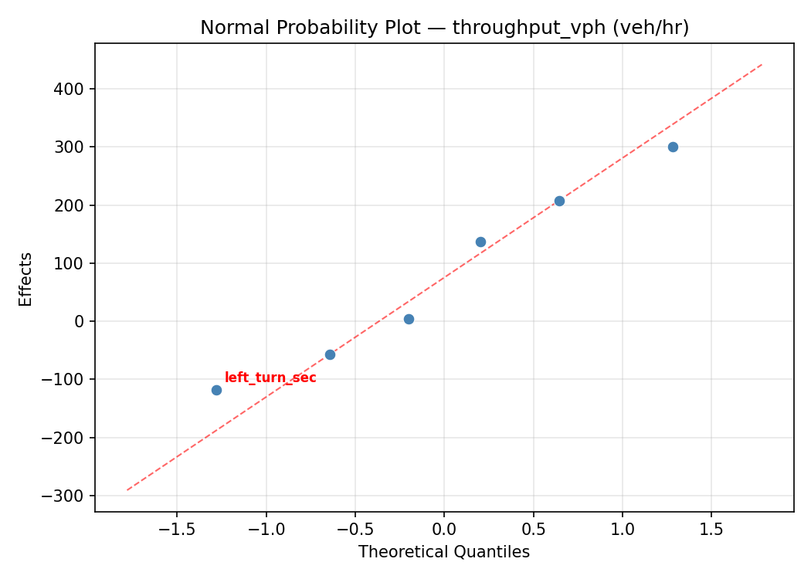
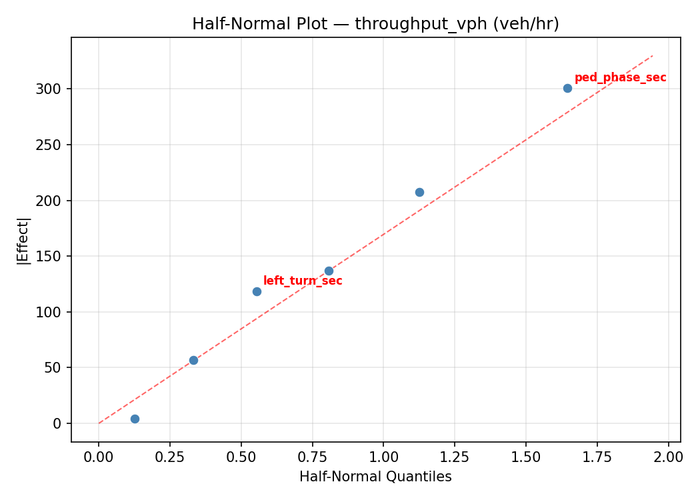
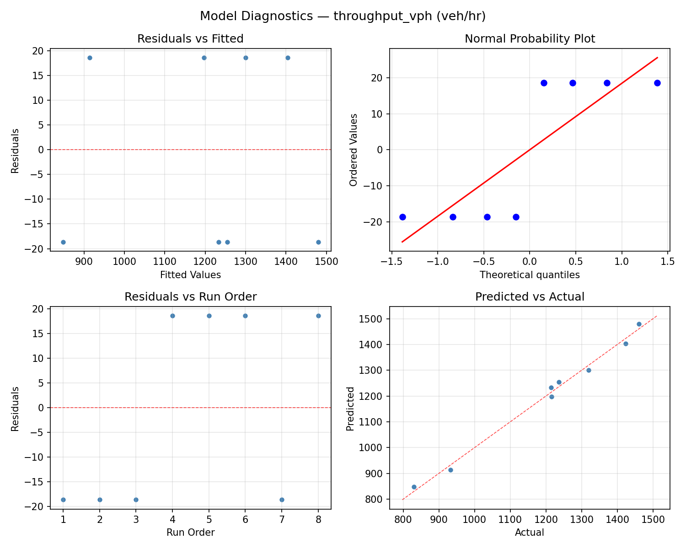
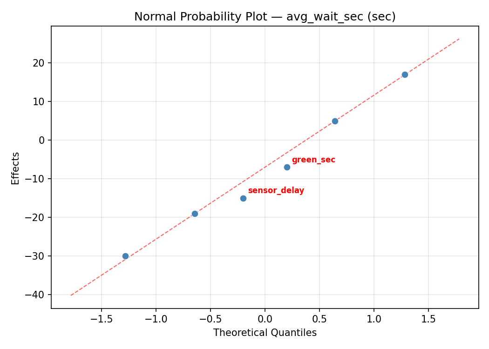
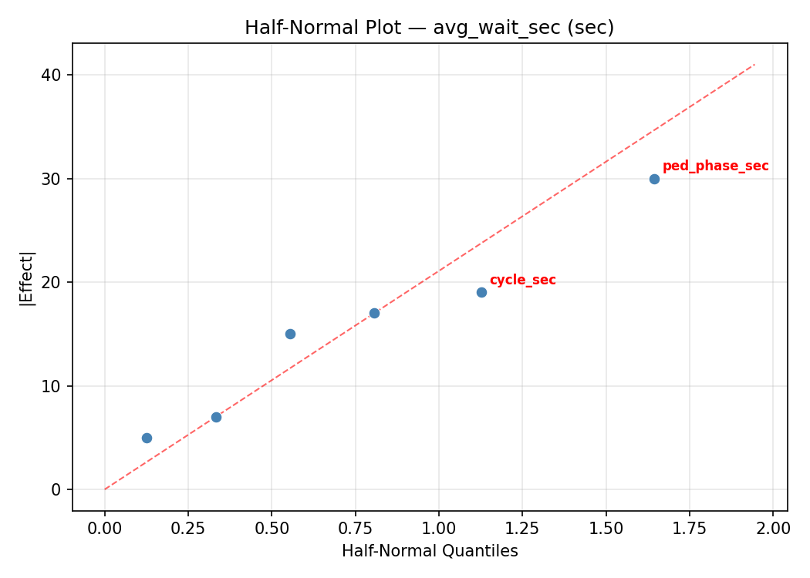
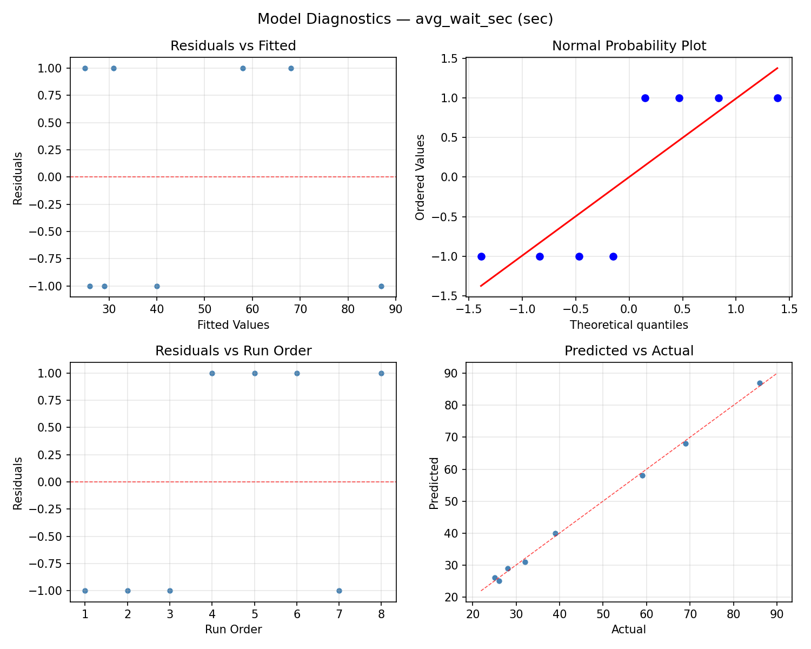

Summary
This experiment investigates traffic signal timing. Plackett-Burman screening of green phase duration, cycle length, offset, pedestrian phase, left-turn phase, and sensor delay for throughput and average wait time.
The design varies 6 factors: green sec (sec), ranging from 15 to 60, cycle sec (sec), ranging from 60 to 150, offset pct (%), ranging from 0 to 50, ped phase sec (sec), ranging from 10 to 30, left turn sec (sec), ranging from 0 to 20, and sensor delay (sec), ranging from 1 to 5. The goal is to optimize 2 responses: throughput vph (veh/hr) (maximize) and avg wait sec (sec) (minimize). Fixed conditions held constant across all runs include intersection type = 4_way, time of day = peak.
A Plackett-Burman screening design was used to efficiently test 6 factors in only 8 runs. This design assumes interactions are negligible and focuses on identifying the most influential main effects.
Key Findings
For throughput vph, the most influential factors were cycle sec (39.5%), ped phase sec (34.0%), sensor delay (11.1%). The best observed value was 1461.0 (at green sec = 15, cycle sec = 150, offset pct = 0).
For avg wait sec, the most influential factors were ped phase sec (35.0%), cycle sec (21.9%), left turn sec (14.8%). The best observed value was 25.0 (at green sec = 15, cycle sec = 150, offset pct = 0).
Recommended Next Steps
- Follow up with a response surface design (CCD or Box-Behnken) on the top 3–4 factors to model curvature and find the true optimum.
- Consider whether any fixed factors should be varied in a future study.
- The screening results can guide factor reduction — drop factors contributing less than 5% and re-run with a smaller, more focused design.
Experimental Setup
Factors
| Factor | Low | High | Unit |
|---|
green_sec | 15 | 60 | sec |
cycle_sec | 60 | 150 | sec |
offset_pct | 0 | 50 | % |
ped_phase_sec | 10 | 30 | sec |
left_turn_sec | 0 | 20 | sec |
sensor_delay | 1 | 5 | sec |
Fixed: intersection_type = 4_way, time_of_day = peak
Responses
| Response | Direction | Unit |
|---|
throughput_vph | ↑ maximize | veh/hr |
avg_wait_sec | ↓ minimize | sec |
Configuration
{
"metadata": {
"name": "Traffic Signal Timing",
"description": "Plackett-Burman screening of green phase duration, cycle length, offset, pedestrian phase, left-turn phase, and sensor delay for throughput and average wait time"
},
"factors": [
{
"name": "green_sec",
"levels": [
"15",
"60"
],
"type": "continuous",
"unit": "sec"
},
{
"name": "cycle_sec",
"levels": [
"60",
"150"
],
"type": "continuous",
"unit": "sec"
},
{
"name": "offset_pct",
"levels": [
"0",
"50"
],
"type": "continuous",
"unit": "%"
},
{
"name": "ped_phase_sec",
"levels": [
"10",
"30"
],
"type": "continuous",
"unit": "sec"
},
{
"name": "left_turn_sec",
"levels": [
"0",
"20"
],
"type": "continuous",
"unit": "sec"
},
{
"name": "sensor_delay",
"levels": [
"1",
"5"
],
"type": "continuous",
"unit": "sec"
}
],
"fixed_factors": {
"intersection_type": "4_way",
"time_of_day": "peak"
},
"responses": [
{
"name": "throughput_vph",
"optimize": "maximize",
"unit": "veh/hr"
},
{
"name": "avg_wait_sec",
"optimize": "minimize",
"unit": "sec"
}
],
"settings": {
"operation": "plackett_burman",
"test_script": "use_cases/122_traffic_signal_timing/sim.sh"
}
}
Experimental Matrix
The Plackett-Burman Design produces 8 runs. Each row is one experiment with specific factor settings.
| Run | green_sec | cycle_sec | offset_pct | ped_phase_sec | left_turn_sec | sensor_delay |
|---|
| 1 | 60 | 150 | 50 | 10 | 0 | 1 |
| 2 | 15 | 60 | 50 | 30 | 0 | 1 |
| 3 | 15 | 150 | 0 | 30 | 0 | 5 |
| 4 | 60 | 150 | 50 | 30 | 20 | 5 |
| 5 | 15 | 150 | 0 | 10 | 20 | 1 |
| 6 | 60 | 60 | 0 | 30 | 20 | 1 |
| 7 | 15 | 60 | 50 | 10 | 20 | 5 |
| 8 | 60 | 60 | 0 | 10 | 0 | 5 |
Step-by-Step Workflow
1
Preview the design
$ python doe.py info --config use_cases/122_traffic_signal_timing/config.json
2
Generate the runner script
$ python doe.py generate --config use_cases/122_traffic_signal_timing/config.json \
--output use_cases/122_traffic_signal_timing/results/run.sh --seed 42
3
Execute the experiments
$ bash use_cases/122_traffic_signal_timing/results/run.sh
4
Analyze results
$ python doe.py analyze --config use_cases/122_traffic_signal_timing/config.json
5
Get optimization recommendations
$ python doe.py optimize --config use_cases/122_traffic_signal_timing/config.json
6
Multi-objective optimization
With 2 competing responses, use --multi to find the best compromise via Derringer–Suich desirability.
$ python doe.py optimize --config use_cases/122_traffic_signal_timing/config.json --multi
7
Generate the HTML report
$ python doe.py report --config use_cases/122_traffic_signal_timing/config.json \
--output use_cases/122_traffic_signal_timing/results/report.html
Features Exercised
| Feature | Value |
|---|
| Design type | plackett_burman |
| Factor types | continuous (all 6) |
| Arg style | double-dash |
| Responses | 2 (throughput_vph ↑, avg_wait_sec ↓) |
| Total runs | 8 |
Analysis Results
Generated from actual experiment runs using the DOE Helper Tool.
Response: throughput_vph
Top factors: cycle_sec (39.5%), ped_phase_sec (34.0%), sensor_delay (11.1%).
ANOVA
| Source | DF | SS | MS | F | p-value |
|---|
| Source | DF | SS | MS | F | p-value |
| green_sec | 1 | 6216.1250 | 6216.1250 | 0.928 | 0.3674 |
| cycle_sec | 1 | 181503.1250 | 181503.1250 | 27.099 | 0.0012 |
| offset_pct | 1 | 435.1250 | 435.1250 | 0.065 | 0.8061 |
| ped_phase_sec | 1 | 134421.1250 | 134421.1250 | 20.070 | 0.0029 |
| left_turn_sec | 1 | 4465.1250 | 4465.1250 | 0.667 | 0.4411 |
| sensor_delay | 1 | 14365.1250 | 14365.1250 | 2.145 | 0.1865 |
| green_sec*cycle_sec | 1 | 435.1250 | 435.1250 | 0.065 | 0.8061 |
| green_sec*offset_pct | 1 | 181503.1250 | 181503.1250 | 27.099 | 0.0012 |
| green_sec*ped_phase_sec | 1 | 4465.1250 | 4465.1250 | 0.667 | 0.4411 |
| green_sec*left_turn_sec | 1 | 134421.1250 | 134421.1250 | 20.070 | 0.0029 |
| green_sec*sensor_delay | 1 | 435.1250 | 435.1250 | 0.065 | 0.8061 |
| cycle_sec*offset_pct | 1 | 6216.1250 | 6216.1250 | 0.928 | 0.3674 |
| cycle_sec*ped_phase_sec | 1 | 14365.1250 | 14365.1250 | 2.145 | 0.1865 |
| cycle_sec*left_turn_sec | 1 | 435.1250 | 435.1250 | 0.065 | 0.8061 |
| cycle_sec*sensor_delay | 1 | 134421.1250 | 134421.1250 | 20.070 | 0.0029 |
| offset_pct*ped_phase_sec | 1 | 435.1250 | 435.1250 | 0.065 | 0.8061 |
| offset_pct*left_turn_sec | 1 | 14365.1250 | 14365.1250 | 2.145 | 0.1865 |
| offset_pct*sensor_delay | 1 | 4465.1250 | 4465.1250 | 0.667 | 0.4411 |
| ped_phase_sec*left_turn_sec | 1 | 6216.1250 | 6216.1250 | 0.928 | 0.3674 |
| ped_phase_sec*sensor_delay | 1 | 181503.1250 | 181503.1250 | 27.099 | 0.0012 |
| left_turn_sec*sensor_delay | 1 | 435.1250 | 435.1250 | 0.065 | 0.8061 |
| Error | (Lenth | PSE) | 7 | 46883.8125 | 6697.6875 |
| Total | 7 | 341840.8750 | 48834.4107 | | |
Pareto Chart

Main Effects Plot

Normal Probability Plot of Effects

Half-Normal Plot of Effects

Model Diagnostics

Response: avg_wait_sec
Top factors: ped_phase_sec (35.0%), cycle_sec (21.9%), left_turn_sec (14.8%).
ANOVA
| Source | DF | SS | MS | F | p-value |
|---|
| Source | DF | SS | MS | F | p-value |
| green_sec | 1 | 144.5000 | 144.5000 | 0.445 | 0.5259 |
| cycle_sec | 1 | 800.0000 | 800.0000 | 2.466 | 0.1603 |
| offset_pct | 1 | 60.5000 | 60.5000 | 0.187 | 0.6788 |
| ped_phase_sec | 1 | 2048.0000 | 2048.0000 | 6.314 | 0.0402 |
| left_turn_sec | 1 | 364.5000 | 364.5000 | 1.124 | 0.3243 |
| sensor_delay | 1 | 288.0000 | 288.0000 | 0.888 | 0.3774 |
| green_sec*cycle_sec | 1 | 60.5000 | 60.5000 | 0.187 | 0.6788 |
| green_sec*offset_pct | 1 | 800.0000 | 800.0000 | 2.466 | 0.1603 |
| green_sec*ped_phase_sec | 1 | 364.5000 | 364.5000 | 1.124 | 0.3243 |
| green_sec*left_turn_sec | 1 | 2048.0000 | 2048.0000 | 6.314 | 0.0402 |
| green_sec*sensor_delay | 1 | 0.5000 | 0.5000 | 0.002 | 0.9698 |
| cycle_sec*offset_pct | 1 | 144.5000 | 144.5000 | 0.445 | 0.5259 |
| cycle_sec*ped_phase_sec | 1 | 288.0000 | 288.0000 | 0.888 | 0.3774 |
| cycle_sec*left_turn_sec | 1 | 0.5000 | 0.5000 | 0.002 | 0.9698 |
| cycle_sec*sensor_delay | 1 | 2048.0000 | 2048.0000 | 6.314 | 0.0402 |
| offset_pct*ped_phase_sec | 1 | 0.5000 | 0.5000 | 0.002 | 0.9698 |
| offset_pct*left_turn_sec | 1 | 288.0000 | 288.0000 | 0.888 | 0.3774 |
| offset_pct*sensor_delay | 1 | 364.5000 | 364.5000 | 1.124 | 0.3243 |
| ped_phase_sec*left_turn_sec | 1 | 144.5000 | 144.5000 | 0.445 | 0.5259 |
| ped_phase_sec*sensor_delay | 1 | 800.0000 | 800.0000 | 2.466 | 0.1603 |
| left_turn_sec*sensor_delay | 1 | 60.5000 | 60.5000 | 0.187 | 0.6788 |
| Error | (Lenth | PSE) | 7 | 2270.6250 | 324.3750 |
| Total | 7 | 3706.0000 | 529.4286 | | |
Pareto Chart

Main Effects Plot

Normal Probability Plot of Effects

Half-Normal Plot of Effects

Model Diagnostics

Response Surface Plots
3D surfaces fitted with quadratic RSM. Red dots are observed data points.
avg wait sec cycle sec vs left turn sec

avg wait sec cycle sec vs offset pct

avg wait sec cycle sec vs ped phase sec

avg wait sec cycle sec vs sensor delay

avg wait sec green sec vs cycle sec

avg wait sec green sec vs left turn sec

avg wait sec green sec vs offset pct

avg wait sec green sec vs ped phase sec

avg wait sec green sec vs sensor delay

avg wait sec left turn sec vs sensor delay

avg wait sec offset pct vs left turn sec

avg wait sec offset pct vs ped phase sec

avg wait sec offset pct vs sensor delay

avg wait sec ped phase sec vs left turn sec

avg wait sec ped phase sec vs sensor delay

throughput vph cycle sec vs left turn sec

throughput vph cycle sec vs offset pct

throughput vph cycle sec vs ped phase sec

throughput vph cycle sec vs sensor delay

throughput vph green sec vs cycle sec

throughput vph green sec vs left turn sec

throughput vph green sec vs offset pct

throughput vph green sec vs ped phase sec

throughput vph green sec vs sensor delay

throughput vph left turn sec vs sensor delay

throughput vph offset pct vs left turn sec

throughput vph offset pct vs ped phase sec

throughput vph offset pct vs sensor delay

throughput vph ped phase sec vs left turn sec

throughput vph ped phase sec vs sensor delay

Multi-Objective Optimization
When responses compete, Derringer–Suich desirability finds the best compromise.
Each response is scaled to a 0–1 desirability, then combined via a weighted geometric mean.
Overall Desirability
D = 1.0000
Per-Response Desirability
| Response | Weight | Desirability | Predicted | Dir |
|---|
throughput_vph |
1.5 |
|
1493.26 1.0000 1493.26 veh/hr |
↑ |
avg_wait_sec |
1.0 |
|
21.84 1.0000 21.84 sec |
↓ |
Recommended Settings
| Factor | Value |
|---|
green_sec | 38.46 sec |
cycle_sec | 139.7 sec |
offset_pct | 4.48 % |
ped_phase_sec | 10.16 sec |
left_turn_sec | 19.9 sec |
sensor_delay | 1.159 sec |
Source: from RSM model prediction
Trade-off Summary
Sacrifice = how much worse than single-objective best.
| Response | Predicted | Best Observed | Sacrifice |
|---|
avg_wait_sec | 21.84 | 25.00 | -3.16 |
Top 3 Runs by Desirability
| Run | D | Factor Settings |
|---|
| #8 | 0.9155 | green_sec=15, cycle_sec=150, offset_pct=0, ped_phase_sec=10, left_turn_sec=20, sensor_delay=1 |
| #6 | 0.7886 | green_sec=15, cycle_sec=150, offset_pct=0, ped_phase_sec=30, left_turn_sec=0, sensor_delay=5 |
Model Quality
| Response | R² | Type |
|---|
avg_wait_sec | 0.9016 | linear |
Full Multi-Objective Output
============================================================
MULTI-OBJECTIVE OPTIMIZATION
Method: Derringer-Suich Desirability Function
============================================================
Overall desirability: D = 1.0000
Response Weight Desirability Predicted Direction
---------------------------------------------------------------------
throughput_vph 1.5 1.0000 1493.26 veh/hr ↑
avg_wait_sec 1.0 1.0000 21.84 sec ↓
Recommended settings:
green_sec = 38.46 sec
cycle_sec = 139.7 sec
offset_pct = 4.48 %
ped_phase_sec = 10.16 sec
left_turn_sec = 19.9 sec
sensor_delay = 1.159 sec
(from RSM model prediction)
Trade-off summary:
throughput_vph: 1493.26 (best observed: 1461.00, sacrifice: -32.26)
avg_wait_sec: 21.84 (best observed: 25.00, sacrifice: -3.16)
Model quality:
throughput_vph: R² = 0.7724 (linear)
avg_wait_sec: R² = 0.9016 (linear)
Top 3 observed runs by overall desirability:
1. Run #1 (D=0.9545): green_sec=60, cycle_sec=60, offset_pct=0, ped_phase_sec=30, left_turn_sec=20, sensor_delay=1
2. Run #8 (D=0.9155): green_sec=15, cycle_sec=150, offset_pct=0, ped_phase_sec=10, left_turn_sec=20, sensor_delay=1
3. Run #6 (D=0.7886): green_sec=15, cycle_sec=150, offset_pct=0, ped_phase_sec=30, left_turn_sec=0, sensor_delay=5
Full Analysis Output
=== Main Effects: throughput_vph ===
Factor Effect Std Error % Contribution
--------------------------------------------------------------
cycle_sec -301.2500 78.1300 39.5%
ped_phase_sec 259.2500 78.1300 34.0%
sensor_delay -84.7500 78.1300 11.1%
green_sec 55.7500 78.1300 7.3%
left_turn_sec -47.2500 78.1300 6.2%
offset_pct 14.7500 78.1300 1.9%
=== ANOVA Table: throughput_vph ===
Source DF SS MS F p-value
-----------------------------------------------------------------------------
green_sec 1 6216.1250 6216.1250 0.928 0.3674
cycle_sec 1 181503.1250 181503.1250 27.099 0.0012
offset_pct 1 435.1250 435.1250 0.065 0.8061
ped_phase_sec 1 134421.1250 134421.1250 20.070 0.0029
left_turn_sec 1 4465.1250 4465.1250 0.667 0.4411
sensor_delay 1 14365.1250 14365.1250 2.145 0.1865
green_sec*cycle_sec 1 435.1250 435.1250 0.065 0.8061
green_sec*offset_pct 1 181503.1250 181503.1250 27.099 0.0012
green_sec*ped_phase_sec 1 4465.1250 4465.1250 0.667 0.4411
green_sec*left_turn_sec 1 134421.1250 134421.1250 20.070 0.0029
green_sec*sensor_delay 1 435.1250 435.1250 0.065 0.8061
cycle_sec*offset_pct 1 6216.1250 6216.1250 0.928 0.3674
cycle_sec*ped_phase_sec 1 14365.1250 14365.1250 2.145 0.1865
cycle_sec*left_turn_sec 1 435.1250 435.1250 0.065 0.8061
cycle_sec*sensor_delay 1 134421.1250 134421.1250 20.070 0.0029
offset_pct*ped_phase_sec 1 435.1250 435.1250 0.065 0.8061
offset_pct*left_turn_sec 1 14365.1250 14365.1250 2.145 0.1865
offset_pct*sensor_delay 1 4465.1250 4465.1250 0.667 0.4411
ped_phase_sec*left_turn_sec 1 6216.1250 6216.1250 0.928 0.3674
ped_phase_sec*sensor_delay 1 181503.1250 181503.1250 27.099 0.0012
left_turn_sec*sensor_delay 1 435.1250 435.1250 0.065 0.8061
Error (Lenth PSE) 7 46883.8125 6697.6875
Total 7 341840.8750 48834.4107
Note: Error estimated using Lenth's pseudo-standard-error (unreplicated design)
=== Interaction Effects: throughput_vph ===
Factor A Factor B Interaction % Contribution
------------------------------------------------------------------------
green_sec offset_pct 301.2500 19.2%
ped_phase_sec sensor_delay 301.2500 19.2%
green_sec left_turn_sec 259.2500 16.5%
cycle_sec sensor_delay -259.2500 16.5%
cycle_sec ped_phase_sec 84.7500 5.4%
offset_pct left_turn_sec -84.7500 5.4%
cycle_sec offset_pct -55.7500 3.6%
ped_phase_sec left_turn_sec 55.7500 3.6%
green_sec ped_phase_sec -47.2500 3.0%
offset_pct sensor_delay -47.2500 3.0%
green_sec cycle_sec -14.7500 0.9%
green_sec sensor_delay 14.7500 0.9%
cycle_sec left_turn_sec -14.7500 0.9%
offset_pct ped_phase_sec 14.7500 0.9%
left_turn_sec sensor_delay 14.7500 0.9%
=== Summary Statistics: throughput_vph ===
green_sec:
Level N Mean Std Min Max
------------------------------------------------------------
15 4 1176.2500 248.9476 830.0000 1423.0000
60 4 1232.0000 223.3831 933.0000 1461.0000
cycle_sec:
Level N Mean Std Min Max
------------------------------------------------------------
150 4 1354.7500 110.2675 1216.0000 1461.0000
60 4 1053.5000 203.1920 830.0000 1236.0000
offset_pct:
Level N Mean Std Min Max
------------------------------------------------------------
0 4 1196.7500 201.2103 933.0000 1423.0000
50 4 1211.5000 270.7699 830.0000 1461.0000
ped_phase_sec:
Level N Mean Std Min Max
------------------------------------------------------------
10 4 1074.5000 230.6549 830.0000 1319.0000
30 4 1333.7500 126.2468 1215.0000 1461.0000
left_turn_sec:
Level N Mean Std Min Max
------------------------------------------------------------
0 4 1227.7500 210.8671 933.0000 1423.0000
20 4 1180.5000 260.7560 830.0000 1461.0000
sensor_delay:
Level N Mean Std Min Max
------------------------------------------------------------
1 4 1246.5000 49.2916 1215.0000 1319.0000
5 4 1161.7500 326.6939 830.0000 1461.0000
=== Main Effects: avg_wait_sec ===
Factor Effect Std Error % Contribution
--------------------------------------------------------------
ped_phase_sec -32.0000 8.1350 35.0%
cycle_sec 20.0000 8.1350 21.9%
left_turn_sec 13.5000 8.1350 14.8%
sensor_delay 12.0000 8.1350 13.1%
green_sec -8.5000 8.1350 9.3%
offset_pct -5.5000 8.1350 6.0%
=== ANOVA Table: avg_wait_sec ===
Source DF SS MS F p-value
-----------------------------------------------------------------------------
green_sec 1 144.5000 144.5000 0.445 0.5259
cycle_sec 1 800.0000 800.0000 2.466 0.1603
offset_pct 1 60.5000 60.5000 0.187 0.6788
ped_phase_sec 1 2048.0000 2048.0000 6.314 0.0402
left_turn_sec 1 364.5000 364.5000 1.124 0.3243
sensor_delay 1 288.0000 288.0000 0.888 0.3774
green_sec*cycle_sec 1 60.5000 60.5000 0.187 0.6788
green_sec*offset_pct 1 800.0000 800.0000 2.466 0.1603
green_sec*ped_phase_sec 1 364.5000 364.5000 1.124 0.3243
green_sec*left_turn_sec 1 2048.0000 2048.0000 6.314 0.0402
green_sec*sensor_delay 1 0.5000 0.5000 0.002 0.9698
cycle_sec*offset_pct 1 144.5000 144.5000 0.445 0.5259
cycle_sec*ped_phase_sec 1 288.0000 288.0000 0.888 0.3774
cycle_sec*left_turn_sec 1 0.5000 0.5000 0.002 0.9698
cycle_sec*sensor_delay 1 2048.0000 2048.0000 6.314 0.0402
offset_pct*ped_phase_sec 1 0.5000 0.5000 0.002 0.9698
offset_pct*left_turn_sec 1 288.0000 288.0000 0.888 0.3774
offset_pct*sensor_delay 1 364.5000 364.5000 1.124 0.3243
ped_phase_sec*left_turn_sec 1 144.5000 144.5000 0.445 0.5259
ped_phase_sec*sensor_delay 1 800.0000 800.0000 2.466 0.1603
left_turn_sec*sensor_delay 1 60.5000 60.5000 0.187 0.6788
Error (Lenth PSE) 7 2270.6250 324.3750
Total 7 3706.0000 529.4286
Note: Error estimated using Lenth's pseudo-standard-error (unreplicated design)
=== Interaction Effects: avg_wait_sec ===
Factor A Factor B Interaction % Contribution
------------------------------------------------------------------------
green_sec left_turn_sec -32.0000 17.3%
cycle_sec sensor_delay 32.0000 17.3%
green_sec offset_pct -20.0000 10.8%
ped_phase_sec sensor_delay -20.0000 10.8%
green_sec ped_phase_sec 13.5000 7.3%
offset_pct sensor_delay 13.5000 7.3%
cycle_sec ped_phase_sec -12.0000 6.5%
offset_pct left_turn_sec 12.0000 6.5%
cycle_sec offset_pct 8.5000 4.6%
ped_phase_sec left_turn_sec -8.5000 4.6%
green_sec cycle_sec 5.5000 3.0%
left_turn_sec sensor_delay -5.5000 3.0%
green_sec sensor_delay -0.5000 0.3%
cycle_sec left_turn_sec 0.5000 0.3%
offset_pct ped_phase_sec -0.5000 0.3%
=== Summary Statistics: avg_wait_sec ===
green_sec:
Level N Mean Std Min Max
------------------------------------------------------------
15 4 49.7500 28.5000 26.0000 86.0000
60 4 41.2500 19.3628 25.0000 69.0000
cycle_sec:
Level N Mean Std Min Max
------------------------------------------------------------
150 4 35.5000 15.9687 25.0000 59.0000
60 4 55.5000 26.7145 28.0000 86.0000
offset_pct:
Level N Mean Std Min Max
------------------------------------------------------------
0 4 48.2500 19.3800 26.0000 69.0000
50 4 42.7500 28.9756 25.0000 86.0000
ped_phase_sec:
Level N Mean Std Min Max
------------------------------------------------------------
10 4 61.5000 22.6053 32.0000 86.0000
30 4 29.5000 6.4550 25.0000 39.0000
left_turn_sec:
Level N Mean Std Min Max
------------------------------------------------------------
0 4 38.7500 20.3204 26.0000 69.0000
20 4 52.2500 26.4748 25.0000 86.0000
sensor_delay:
Level N Mean Std Min Max
------------------------------------------------------------
1 4 39.5000 13.7720 28.0000 59.0000
5 4 51.5000 30.8167 25.0000 86.0000
Optimization Recommendations
=== Optimization: throughput_vph ===
Direction: maximize
Best observed run: #1
green_sec = 15
cycle_sec = 150
offset_pct = 0
ped_phase_sec = 30
left_turn_sec = 0
sensor_delay = 5
Value: 1461.0
RSM Model (linear, R² = 0.7487, Adj R² = -0.7591):
Coefficients:
intercept +1204.1250
green_sec +18.3750
cycle_sec +54.1250
offset_pct +94.3750
ped_phase_sec +124.6250
left_turn_sec -28.1250
sensor_delay +59.1250
Predicted optimum (from linear model, at observed points):
green_sec = 60
cycle_sec = 150
offset_pct = 50
ped_phase_sec = 30
left_turn_sec = 20
sensor_delay = 5
Predicted value: 1526.6250
Surface optimum (via L-BFGS-B, linear model):
green_sec = 60
cycle_sec = 150
offset_pct = 50
ped_phase_sec = 30
left_turn_sec = 0
sensor_delay = 5
Predicted value: 1582.8750
Model quality: Good fit — general trends are captured, some noise remains.
Factor importance:
1. ped_phase_sec (effect: 249.2, contribution: 32.9%)
2. offset_pct (effect: 188.8, contribution: 24.9%)
3. sensor_delay (effect: 118.2, contribution: 15.6%)
4. cycle_sec (effect: -108.2, contribution: 14.3%)
5. left_turn_sec (effect: -56.2, contribution: 7.4%)
6. green_sec (effect: 36.8, contribution: 4.9%)
=== Optimization: avg_wait_sec ===
Direction: minimize
Best observed run: #1
green_sec = 15
cycle_sec = 150
offset_pct = 0
ped_phase_sec = 30
left_turn_sec = 0
sensor_delay = 5
Value: 25.0
RSM Model (linear, R² = 0.5461, Adj R² = -2.1770):
Coefficients:
intercept +45.5000
green_sec -4.0000
cycle_sec -3.2500
offset_pct -9.2500
ped_phase_sec -8.2500
left_turn_sec -0.7500
sensor_delay -8.5000
Predicted optimum (from linear model, at observed points):
green_sec = 15
cycle_sec = 150
offset_pct = 0
ped_phase_sec = 10
left_turn_sec = 20
sensor_delay = 1
Predicted value: 71.5000
Surface optimum (via L-BFGS-B, linear model):
green_sec = 60
cycle_sec = 150
offset_pct = 50
ped_phase_sec = 30
left_turn_sec = 20
sensor_delay = 5
Predicted value: 11.5000
Model quality: Moderate fit — use predictions directionally, not precisely.
Factor importance:
1. offset_pct (effect: -18.5, contribution: 27.2%)
2. sensor_delay (effect: -17.0, contribution: 25.0%)
3. ped_phase_sec (effect: -16.5, contribution: 24.3%)
4. green_sec (effect: -8.0, contribution: 11.8%)
5. cycle_sec (effect: 6.5, contribution: 9.6%)
6. left_turn_sec (effect: -1.5, contribution: 2.2%)